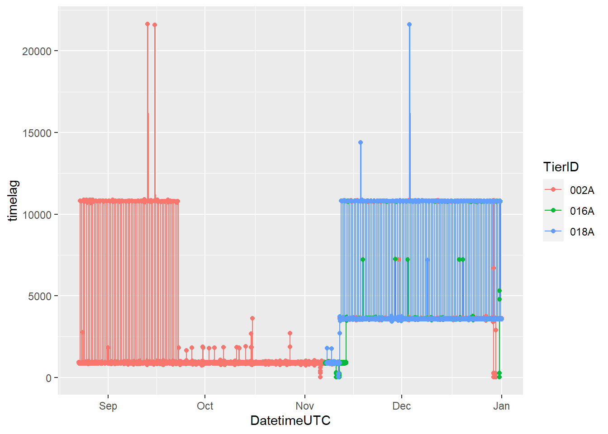
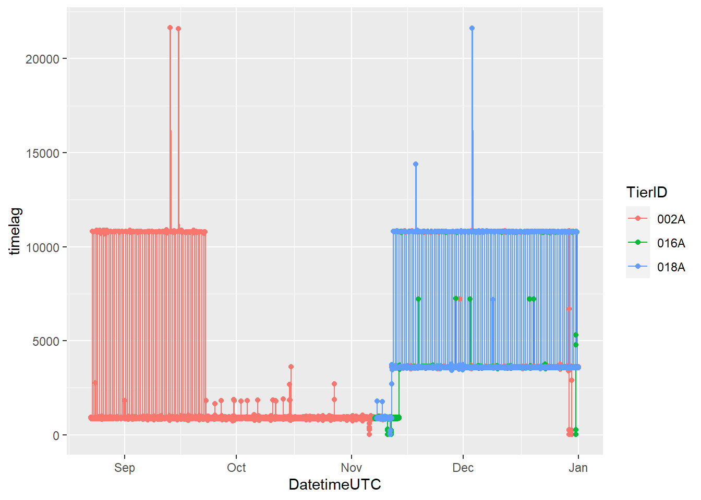
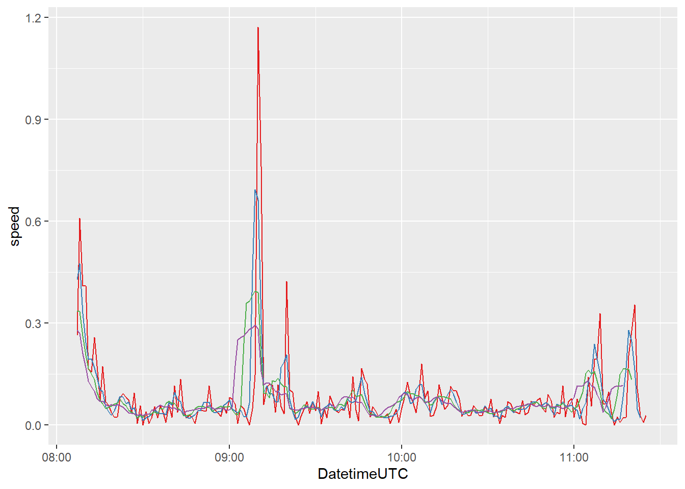

Tasks and Inputs
Install the package zoo to get access to the rolling window functions for last exercise.
install.packages("zoo")Import the wild boar data and convert it to an sf object with CH1903+ LV95 Coordinates. Either run your own script from last week or the following lines to bring the data to the form we need it for today exercise.
library(tidyverse)
## -- Attaching packages --------------------------------------- tidyverse 1.3.0 --
## v tibble 3.0.4 v purrr 0.3.4
## v tidyr 1.1.2 v forcats 0.5.1
## Warning: package 'tidyr' was built under R version 4.0.4
## -- Conflicts ------------------------------------------ tidyverse_conflicts() --
## x terra::collapse() masks dplyr::collapse(), glue::collapse()
## x terra::desc() masks dplyr::desc()
## x tidyr::expand() masks terra::expand()
## x tidyr::extract() masks terra::extract()
## x tidyr::fill() masks terra::fill()
## x dplyr::filter() masks stats::filter()
## x dplyr::lag() masks stats::lag()
## x terra::near() masks dplyr::near()
## x tidyr::pack() masks terra::pack()
## x terra::select() masks dplyr::select()
## x tidyr::separate() masks terra::separate()
## x purrr::transpose() masks terra::transpose()
library(sf)
library(lubridate)
## Warning: package 'lubridate' was built under R version 4.0.4
##
## Attaching package: 'lubridate'
## The following objects are masked from 'package:terra':
##
## intersect, union
## The following objects are masked from 'package:base':
##
## date, intersect, setdiff, union
wildschwein_BE <- read_delim("00_Rawdata/wildschwein_BE.csv",",")
##
## -- Column specification --------------------------------------------------------
## cols(
## TierID = col_character(),
## TierName = col_character(),
## CollarID = col_double(),
## DatetimeUTC = col_datetime(format = ""),
## Lat = col_double(),
## Long = col_double()
## )
wildschwein_BE = st_as_sf(wildschwein_BE,
coords = c("Long", "Lat"),
crs = 4326)
wildschwein_BE <- st_transform(wildschwein_BE, 2056)Task 1: Getting an overview
Calculate the time difference between subsequent rows as described in the demo (column timelag).
First, inspect your data in more detail. Try to answer the following questions:
- How many individuals were tracked?
- For how long were the individual tracked? Are there gaps?
- Were all individuals tracked concurrently or sequentially?
- What is the temporal sampling interval between the locations?
Here are some exemplary visualisation you could produce to answer these questions. Can you now answer the above questions?

## Warning: Removed 35 rows containing non-finite values (stat_bin).
## Warning: Transformation introduced infinite values in continuous y-axis
## Warning: Removed 205 rows containing missing values (geom_bar). 

Input: Geometry as columns
Last week, we transformed our data from a data.frame to an sf object. This turned our Lat/Long columns into a single geometry (list) column. While this is very handy for many spatial operations, accessing the coordinates directly becomes difficult. We therefore suggest storing the information twice, once as a geometry and once as a numeric value. To do this, we have to extract the Coordinates using st_coordinates(). We can store these values in a new variable and display them:
# Store coordinates in a new variable
coordinates <- st_coordinates(wildschwein_BE)
head(coordinates)
## X Y
## 1 2570409 1204752
## 2 2570402 1204863
## 3 2570394 1204826
## 4 2570379 1204817
## 5 2570390 1204818
## 6 2570390 1204825Note that that the column are named X and Y, while CH1903+ LV95 names the Axes E and N: let’s rename the columns appropriately. After this, we can use cbind() to “glue” the columns to our original sf-object.
colnames(coordinates) <- c("E","N")
wildschwein_BE <- cbind(wildschwein_BE,coordinates)
head(wildschwein_BE)
## Simple feature collection with 6 features and 7 fields
## geometry type: POINT
## dimension: XY
## bbox: xmin: 2570379 ymin: 1204752 xmax: 2570409 ymax: 1204863
## projected CRS: CH1903+ / LV95
## TierID TierName CollarID DatetimeUTC timelag E N
## 1 002A Sabi 12275 2014-08-22 21:00:12 904 2570409 1204752
## 2 002A Sabi 12275 2014-08-22 21:15:16 927 2570402 1204863
## 3 002A Sabi 12275 2014-08-22 21:30:43 924 2570394 1204826
## 4 002A Sabi 12275 2014-08-22 21:46:07 855 2570379 1204817
## 5 002A Sabi 12275 2014-08-22 22:00:22 888 2570390 1204818
## 6 002A Sabi 12275 2014-08-22 22:15:10 903 2570390 1204825
## geometry
## 1 POINT (2570409 1204752)
## 2 POINT (2570402 1204863)
## 3 POINT (2570394 1204826)
## 4 POINT (2570379 1204817)
## 5 POINT (2570390 1204818)
## 6 POINT (2570390 1204825)#- chunkendTask 2: Deriving movement parameters I: Speed
In this task we will derive some additional movement parameters from our trajectories. So far our trajectories only consist of a list of time-stamped spatial locations. So let’s calculate the animal’s steplength based on the Euclidean distance between two subsequent locations.
- You can calculate the Euclidean distance with the following formula:
sqrt((E1-E2)^2+(N1-N2)^2) - use
lead(E,1)to address the the rown+1(i.e. E2)
Why do we use E and N when calculating the Euclidean distance, and not Lat/Long? Now calculate the animals’ speed between subsequent locations based on the steplength as calculated in the previous task and the timelag between the locations. What speed unit do you get?
Task 3: Cross-scale movement analysis
Laube and Purves (2011) analyse animal movement across different scales (see below). We will do the same on a subset of our data.
knitr::include_graphics("02_Images/laube_2011_2.jpg")
Figure 2: Black points are used in calculation of movement parameters (e.g. speed) at a given termporal scale (Laube and Purves, 2011)
Import “Caro60”
In the first task, we saw that the animals are sampled at different frequencies. To simplify the task, we’ve prepared a dataset that includes 200 locations of a single wild boar with a constant sampling interval of 60 seconds. Import this dataset named “caro60.csv” (available on moodle) just like you imported the other wild boar data. NOTE: We’ve converted the positions to CH1903+ LV95 for your convenience. Consider this when transforming to sf!
Save this data to a new variable (we will use caro60).


Resample
Now manually reduce the granularity of our sampling interval by selecting every 3rd, 6th and 9th position.
If you like to stick to the tidyverse approach, you can use slice() to subset the dataset by row number. Slice takes an integer vector. Eg: slice(dataset, 1:10), returns the first 10 rows of a dataset, slice(dataset, c(1,5,10)) returns the 1st, 5th and 10th value of a dataset. Save each re-sampled dataset in a new variable. We will use caro60_3, caro60_6 and caro60_9.
You should now have 4 data sets with different number of rows:
nrow(caro60)
## [1] 200
nrow(caro60_3)
## [1] 67
nrow(caro60_6)
## [1] 34
nrow(caro60_9)
## [1] 23Update derived parameters
timelag, steplength and speed now have to be recalculated for the three re-sampled data sets. Do so as we illustrated in the Chapter Demo.
Visualize
Compare the speeds in a line plot and visualize the trajectories in a map (see examples below). Interpret the line plot, what do the different lines for the different temporal granularities tell you?
We’ve stored the geographic location of our point in the trajectory in three different forms in our dataset. Once as a geometry, once as E/N and once as lat/long. In our view, it is most practical to use the E/N (integer) columns of our data to map them in this task
geom_sf()does not plot lines, just points- Therefore, use
geom_path()andgeom_point()rather thangeom_sf()withinggplot - In contrast to
geom_sf(), you have to explicitly specify thex/ycolumns (in our caseE/N) withgeom_path()/geom_point() geom_line()does not work when mapping trajectory data, since it connects the observations in order of the variable on the x axis.geom_path()connects the observations in the order in which they appear in the data
##
## -- Column specification --------------------------------------------------------
## cols(
## TierID = col_character(),
## TierName = col_character(),
## CollarID = col_double(),
## DatetimeUTC = col_datetime(format = ""),
## N = col_double(),
## E = col_double()
## )

## Warning: Removed 1 row(s) containing missing values (geom_path).
## Warning: Removed 1 row(s) containing missing values (geom_path).
## Warning: Removed 1 row(s) containing missing values (geom_path).
## Warning: Removed 1 row(s) containing missing values (geom_path).
Task 4: Deriving movement parameters II: Rolling window functions
A different approach would be to smoothen the derived parameters using a moving window function. The zoo package offers a variate of moving window functions (roll_*). Use roll_mean() to smooth the calculated speed. Familiarise yourself with this function by working on some dummy data, for example:
{kind=link}
library(zoo)
##
## Attaching package: 'zoo'
## The following object is masked from 'package:terra':
##
## time<-
## The following objects are masked from 'package:base':
##
## as.Date, as.Date.numeric
example <- rnorm(10)
rollmean(example,k = 3,fill = NA,align = "left")
## [1] 0.93634335 0.31709038 0.02370048 0.67869801 0.73369105 0.50401344
## [7] -0.56144365 -0.56902598 NA NA
rollmean(example,k = 4,fill = NA,align = "left")
## [1] 0.6775521 0.2045005 0.5848215 0.5255629 0.3446928 0.1459635
## [7] -0.4102301 NA NA NANow run rollmeanon the speed variable of the subset (caro60). Visualize the output from your moving windows and compare different window sizes (k =).

Task 5 (optional): Calculate turning angles
Just like we did with speed in tasks 2 - 4, we could do the same with turning angles of the trajectory. If you like a challenge, try to calculate these with the same approach! Warning: this task is pretty complex. Note, as this task is optional, you don’t have to include it in your mandatory submission of Exercise 2!